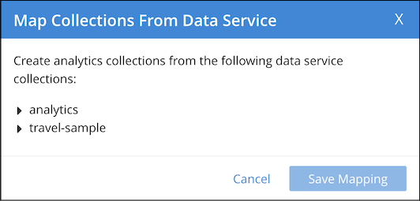
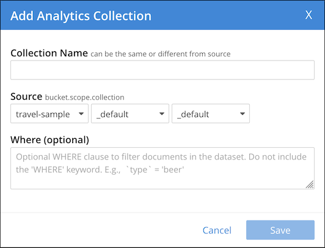
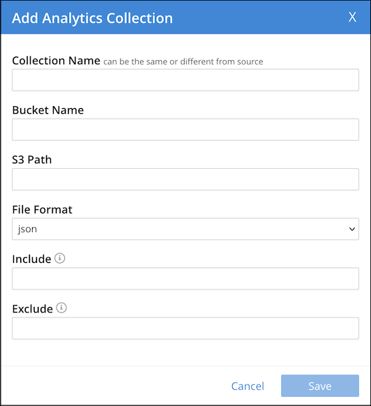

The Analytics Workbench enables you to create, edit, and drop collections. The Analytics Workbench also enables you to connect or disconnect local links and remote links.
Collections are displayed in the insights sidebar of the Analytics Workbench. Each collection is listed below the link on which it was created.
Refer to Analytics Collections for further details on collections.
Mapping Collections from the Data Service
Mapping collections from the Data service provides a quick way to make collections in the Data service available in Analytics. The mapping process creates an Analytics scope that corresponds to each specified Data service scope, and within each Analytics scope, an Analytics collection that corresponds to each specified Data service collection. Each mapped Analytics collection uses the equivalent Data service collection as its data source.
To map collections from the Data service:
-
In the insights sidebar, click the Map From Data Service button.
The Map Collections From Data Service dialog is displayed, showing all the buckets available in the Data service.
 -
Locate and select each collection in the Data service that you want to map:
-
Click the rightward-pointing arrowhead before the name of the required bucket, to display the scopes within that bucket.
-
Click the rightward-pointing arrowhead before the name of the required scope, to display the collections within that scope.
-
Check the box next to each of the collections that you want to map.
-
-
Choose Save Mapping to map the selected collections, or Cancel to cancel.
You can also map collections from the Data service using the ALTER COLLECTION statement. For more information about mapping collections from the Data Service, refer to Alter Statements.
Creating a Collection on a Local Link
Although mapping collections from the Data service is convenient, you may sometimes need greater control over the creation of an Analytics collection on a local link; for example, if you need to create an Analytics collection which has a different name or different scope to its data source. In this case, you can create a single Analytics collection on a local link.
To create an Analytics collection on a local link:
-
In the insights sidebar, click + collection next to the local link where you want to create the collection.
The Add Analytics Collection dialog is displayed.
 -
In the Collection Name box, enter a name for the Analytics collection.
-
Use the Source drop-down lists to select a bucket, scope, and collection to specify the data source for this Analytics collection.
-
If necessary, in the Where box, enter an expression to filter the documents in the collection. You must not include the WHERE keyword, and the expression must be deterministic. For example,
activity = "eat". -
Choose Save to create the link, or Cancel to cancel.
You can also create a collection on a local link using the CREATE ANALYTICS COLLECTION statement. For more information about creating collections, refer to Create Statements.
Creating a Collection on a Remote Link
To create an Analytics collection on a remote link:
-
In the insights sidebar, click + collection next to the remote link where you want to create the collection.
The Add Analytics Collection dialog is displayed.
-
In the Collection Name box, enter a name for the collection.
-
Use the Source drop-down lists to select a bucket, scope, and collection on the remote Couchbase cluster which specify the data source for this Analytics collection.
-
If necessary, in the Where box, enter an expression to filter the documents in the collection. You must not include the WHERE keyword, and the expression must be deterministic. For example,
activity = "eat". -
Choose Save to create the link, or Cancel to cancel.
You can also create a collection on a remote link using the CREATE ANALYTICS COLLECTION statement. For more information about creating collections, refer to Create Statements.
Creating a Collection on an External Link
To create an Analytics collection on an external link:
-
In the insights sidebar, click + collection next to the external link where you want to create the collection.
The Add Analytics Collection dialog is displayed.
 -
In the Collection Name box, enter a name for the collection.
-
In the Bucket Name box, enter the name of the Amazon S3 bucket which is the data source for this collection.
-
If necessary, in the S3 Path box, enter the path to the location of the data relative to the external data source. For example:
json-data/reviews. -
Open the File Format drop-down list and select the format of the external data:
-
JSON — Data is in JSON Lines format.
-
CSV — Data is in comma-separated values format.
-
TSV — Data is in tab-separated values format.
-
-
If you specified CSV or TSV file format, in the Type definition box, enter a comma-separated list of field definitions to guide the transformation of each CSV or TSV record into a JSON object. Each field definition should consist of:
-
A name to be assigned to the field.
-
The data type of the field. This may be any of the primitive data types, where
INTis an alias forBIGINT. If this field does not contain a value of this data type, the record is ignored. -
Optionally, the
NOT UNKNOWNflag. When this flag is present, if this field ismissingornull, the record is ignored.
For example:
id INT NOT UNKNOWN, datetime STRING NOT UNKNOWN, amount DOUBLE NOT UNKNOWN, details STRING. -
-
If you specified CSV or TSV file format, check the Header check box if the first row of the file should be skipped.
-
If you specified CSV or TSV file format, in the Null Value box, enter the string used in the external collection to represent a
nullvalue. You may escape special characters using a backslash\. -
In the Include box, enter the names of the files to be included from the external collection. The file name may include subdirectories of the location specified by the S3 Path option. Any files that do not match the specification are excluded. This option may not be used if the Exclude option is specified.
The file names may contain the following wildcard characters, in common with the Exclude option:
*— Matches anything
?— Matches any single character
[sequence]— Matches any characters in sequence
[!sequence]— Matches any characters not in sequenceFor example:
["*2018*.json", "*2019*.json"]. -
In the Exclude box, enter the names of the files to be excluded from the external collection. The file name may include subdirectories of the location specified by the S3 Path option. Any files that do not match the specification are included. This option may not be used if the Include option is specified.
The file names may contain the same wildcard characters as the Include option. For example:
"*.?sv". -
Choose Save to create the link, or Cancel to cancel.
Note that for an external collection, data in JSON, CSV, or TSV format may be stored in compressed GZIP files, with the extension .gz or .gzip.
You can also create a collection on an external link using the CREATE EXTERNAL ANALYTICS COLLECTION statement. For more information about creating collections, refer to Create Statements.
Connecting Collections
When you have created one or more collections on a local link or a remote link, you must connect the link, so that collections on the link can shadow data from their data sources.
To connect a link, click the disconnected link icon next to the link name in the insights sidebar.
When the link is connected, a connected link icon is displayed next to the link name, and any collections listed below that link are shown in black.
You can also connect a link using the CONNECT statement. For more information about connecting links, refer to Connect Statements.
Disconnecting Collections
Disconnecting a local link or a remote link disconnects all collections on that link from their data sources.
To disconnect a link, click the connected link icon next to the link name in the insights sidebar.
When the link is disconnected, a disconnected link icon is displayed next to the link name, and any collections listed below that link are shown in orange.
You can also disconnect a link using the DISCONNECT statement. For more information on disconnecting links, refer to Disconnect Statements.
Viewing Collection Summaries
You can view a summary of a collection in the insights sidebar.
To display a summary of a collection, click the collection name in the insights sidebar, or click the rightward-pointing arrowhead before the collection name.
The collection summary appears below the collection name, showing the name of the keyspace which is the data source for this collection, and (if applicable) the expression which filters the documents in the keyspace.
If you have created any indexes on this collection, the index names and definitions are shown below the collection summary.
To hide the summary of a collection, click the collection name in the insights sidebar again, or click the downward-pointing arrowhead before the collection name.
When data ingestion is in progress, an indicator below each collection shows the percentage of mutations that remain to be synchronized to that collection. If the indicator is not displayed, then the collection is up-to-date.
Deleting a Collection
To delete an Analytics collection:
-
If necessary, in the insights sidebar, click the name of the collection to display the collection summary.
-
Click drop analytics collection below the collection name.
A message box appears, asking if you are sure that you want to delete the collection.
-
Choose Continue to delete the collection, or Cancel to cancel.
You can also delete a collection using the DROP ANALYTICS COLLECTION statement. For more information on deleting a collection, refer to Drop Statements.
Deleting a Scope
You can delete an Analytics scope from the insights sidebar, as long as the scope contains no remote links or external links, and contains no collections on the Local link.
You cannot delete the Default Analytics scope.
To delete an Analytics scope:
-
In the insights sidebar, click the trash can icon next to the scope name.
A message box appears, asking if you are sure that you want to delete the scope.
-
Choose Continue to delete the scope, or Cancel to cancel.